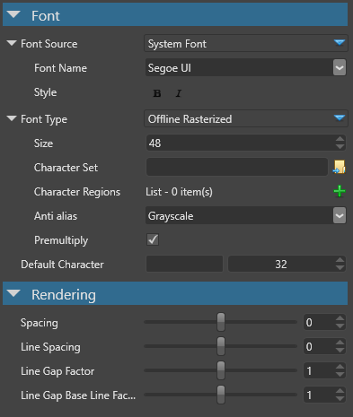
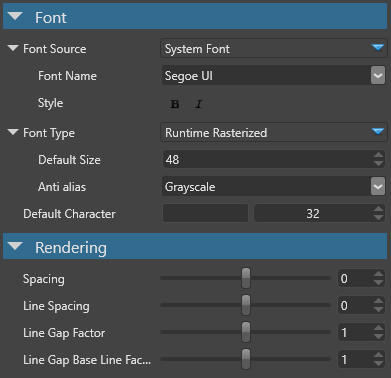
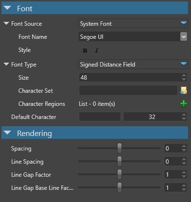
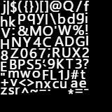
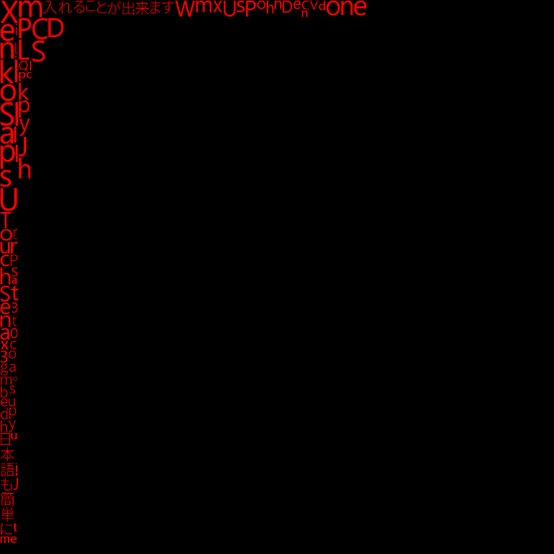
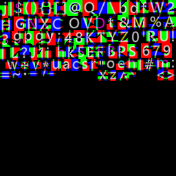

Sprite fonts
Warning
Приносим свои извинения за неудобства. Для этой страницы нет перевода на русский язык. Она будет отображаться на английском языке.
Intermediate
Sprite fonts take a TrueType font as an input (either a system font or a file you assign) and then create all the images (sprites) of characters (glyphs) for your game.
It's often inefficient to render fonts directly. We usually want to create (rasterize) them just once, then only render the image of a letter character (eg A, a, B, C etc) every time we need it. This involves creating a sprite (billboarded rectangular image) of the character, which is displayed on the screen as a regular image. A text block would be a collection of sprites rendered as quads so all the characters are aligned and spaced properly.
Offline-rasterized sprite fonts
Offline-rasterized sprite fonts create (rasterize) a fixed number of characters (glyphs) of a certain size, and bake them into an atlas texture when building the assets for your game.
In the game, they can only be drawn with this size. Only the characters you specify can be displayed.
When to use offline-rasterized fonts
Use offline-rasterized fonts when:
you use a font of known size with a known character set in your game
you need anti-aliasing on your fonts
your UI is only used in fullscreen mode
Do not use offline-rasterized fonts when:
your UI is rendered as part of the 3D world scene
you have a varied or unknown number of font sizes and character sets
Offline-rasterized sprite font properties

| Property | Description |
|---|---|
| Font Source | System (installed on this machine) or from file. The system fonts can also take Bold and Italic options. |
| Font Type | Offline Rasterized |
| Size (in pixels) | The font is baked with this size. No other font size can be displayed. |
| Character set | (Optional) A text file containing all characters which need to be baked. |
| Character regions | Code for regions of characters which need to be baked. For example, (32 - 127) is a region sufficient for ASCII character sets. |
| Anti alias | None, Grayscale or ClearType |
| Premultiply | If the alpha should be premultiplied. Default is yes to match the rest of the engine pipeline. |
| Default character | Missing characters default to this when rendered. The default code is 32 which is space. |
Runtime-rasterized sprite fonts
Runtime-rasterized sprite fonts create (rasterize) a varied number of characters (glyphs) of any size and bake them into an atlas texture on demand.
This function is invoked at runtime when you change the font size or request characters that haven't been drawn before.
Under the hood, the runtime-rasterized fonts use similar atlas textures to the offline-rasterized fonts. This means that if you have three different font sizes, they take about three times more memory than a single font size. The font sizes are also taken into account.
When to use runtime-rasterized fonts
Use runtime-rasterized fonts when:
you need multiple sizes for your font or don't know which characters you need
the number of possible characters in the font greatly outnumbers the number of characters you need to display at runtime (eg Japanese or Chinese, which use thousands of characters)
you need anti-aliasing on your fonts
your UI is only used in fullscreen mode
Do not use runtime-rasterized fonts when:
your UI is rendered as part of the 3D world scene
you only need one or two known sizes for a small character set
you have a scaling text (as runtime-rasterized fonts will recreate every single font size)
Runtime-rasterized sprite font properties

| Property | Description |
|---|---|
| Font Source | System (installed on this machine) or from file. The system fonts can also take Bold and Italic options. |
| Font Type | Runtime Rasterized |
| Default Size (in pixels) | If size isn't specified the text is rendered with this one. |
| Anti alias | None, Grayscale or ClearType |
| Default character | Missing characters will default to this one when rendered. The default code is 32, which is space. |
Signed distance field sprite fonts
Signed distance field (SDF) fonts use an entirely different technique to render fonts. Rather than rasterize the color of the character on the sprite, they output the distance of the current pixel to the closest edge of the glyph.
The distance is positive if the pixel is inside the glyph boundaries, and negative if the pixel is outside the glyph (hence the name signed).
When rendering, check the distance and output a white pixel if it's positive or 0, and a black pixel if it's negative. This allows very sharp and clean edges to be rendered even under magnification (which otherwise makes traditional sprites look pixelated).
The image below compares SDF fonts and the offline-rasterized fonts under magnification:

When to use SDF fonts
Use SDF fonts when:
your UI is rendered as part of the 3D world scene or fullscreen (SDF works well for both cases)
you have a scaling text or expect the user to be able to zoom in
you require multiple sizes for your font
you have very large font sizes (SDF consumes less memory than runtime-rasterized fonts)
Do not use SDF fonts when:
you need anti-aliasing on your fonts (SDF fonts currently don't support it)
you only require one or two known sizes for a small character set (better use offline-rasterized font)
the number of possible characters in the font greatly outnumbers the number of characters you need to display at runtime (eg Japanese or Chinese, which use thousands of characters). If a runtime-rasterized font is not an option (eg because of scaling), make sure you bake every character you might need, or they won't be displayed.
SDF properties

| Property | Description |
|---|---|
| Font Source | System (installed on this machine) or from file. The system fonts can also choose Bold and Italic options. |
| Font Type | Offline Rasterized |
| Size (in pixels) | The font will be baked with this size. All font sizes can still be displayed. Bigger size usually results in better quality, and generally you want to keep this at 20 or more to avoid visual glitches. |
| Character set | (Optional) A text file containing all characters which need to be baked. |
| Character regions | Code for regions of characters which need to be baked. For example (32 - 127) is a region sufficient for ASCII character sets. |
| Default character | Missing characters will default to this one when rendered. The default code is 32 which is space. |
Texture atlases for different sprite fonts
Offline rasterized

The offline-rasterized sprite font bakes all requested characters once in a grayscale texture. If you zoom in, you'll see that they are pixelated. The font has a fixed size and doesn't work well for scaling text.
Runtime rasterized

The runtime-rasterized sprite font only bakes (rasterizes) the characters that are drawn in the game. The initial atlas texture is intentionally bigger so it can hold more characters of potentially different sizes before it needs resizing.
Signed distance field

Like the offline-rasterized sprite font, the signed distance field sprite font bakes all requested characters once. The major difference is that it encodes distances from the character lines rather than actual color, and it uses all three channels' RGB. You can still recognize each character, but a special shader is needed to render them properly. The upside is that the edges remain sharp, even under magnification.